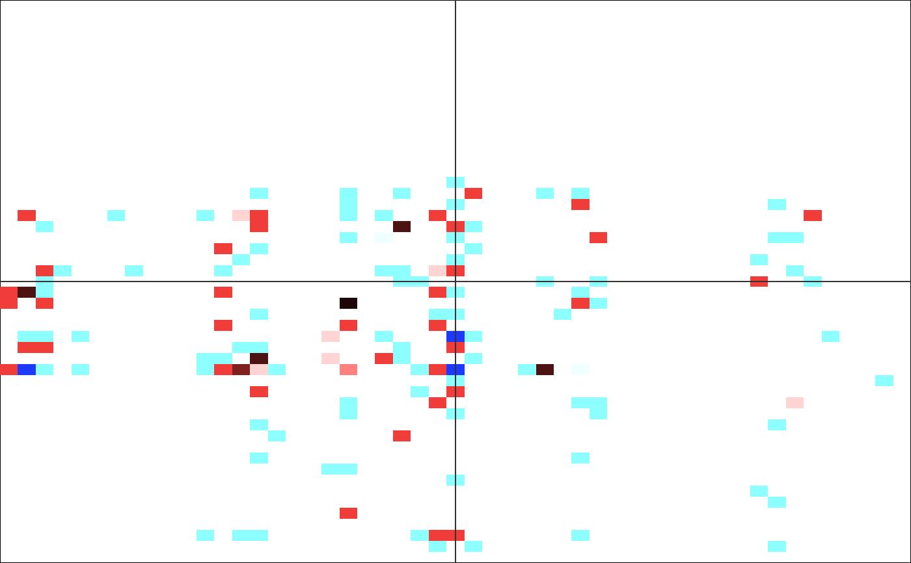

R/shaman_feature_grid.R
shaman_generate_feature_grid.Rdshaman_generate_feature_grid
1d intervals representing feature 1. Strand, if provided will be ignored.
1d intervals representing feature 2. Strand, if provided will be ignored.
Name of observed 2D genomic track for the hic data.
Name of expected 2D genomic track.
Name of 2D score track. If track doesn't exist, no filter on grid will be applied.
Minimum value of score within the expanded window surrounding the grid point for the window to be considered in the statistics.
Window size around the grid point.
Size of bins (in base pairs).
Minimum distance between features on the grid.
Maximum distance between features on the grid.
list containing obs - observed matrix, sum of the number of observed contacts in each bin in the window, exp - expected matrix, sum of the number of expected contacts in each bin in the window, grid_size - number of windows included in statistics
Build a grid comprising of all combinations of intervals from feature 1 and feature 2 that fall within a band defined by min_dist and max_dist. For each point on the grid, look at the surrounding window, defined by range parameter. Discard all windows that do not contain a point with a score (defined in score_track_nm) above the score_filter parameter. This allows for focusing on potentially enriched pairs. Dissect the window into small bins, size in base pairs defined by the resolution parameter, and count the number of observed contacts, and the number of expected contacts in each bin. All windows are then summed together, generating a single matrix of observed and expected contacts, which is returned by function. Note that grid contains only points in which feature 1 position is smaller than feature 2 position.
# Set misha db to test
library(misha)
gsetroot(shaman_get_test_track_db())
# the test db has chr2 only, with contacts in chr2:176.5e06-177e06
grid <- shaman_generate_feature_grid(
ctcf_forward[ctcf_forward$chrom == "chr2", ], ctcf_reverse[ctcf_reverse$chrom == "chr2", ],
"hic_obs",
exp_track_nm = "hic_exp", min_dist = 1e05, max_dist = 5e05
)
#> building grid...
#> screening for filter
#> found 898 regions
#> obs neighbors...
#> exp neighbors...
plot <- shaman_plot_feature_grid(list(grid), 25000, 500, 1000)
#> Using sum as value column: use value.var to override.
#> Using sum as value column: use value.var to override.
